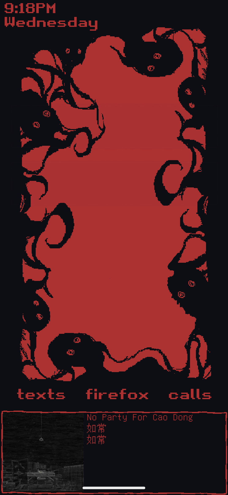

This is the small collection of stuff I've made.
Most of it is blender which I began learning in 2020, some of it is other stuff such as desktop and phone wallpapers
I put together. My hope in putting these here, is that having a place to put any creations will
make me feel more inclined to actually make and finish things for once.


Most of it is blender which I began learning in 2020, some of it is other stuff such as desktop and phone wallpapers
I put together. My hope in putting these here, is that having a place to put any creations will
make me feel more inclined to actually make and finish things for once.
